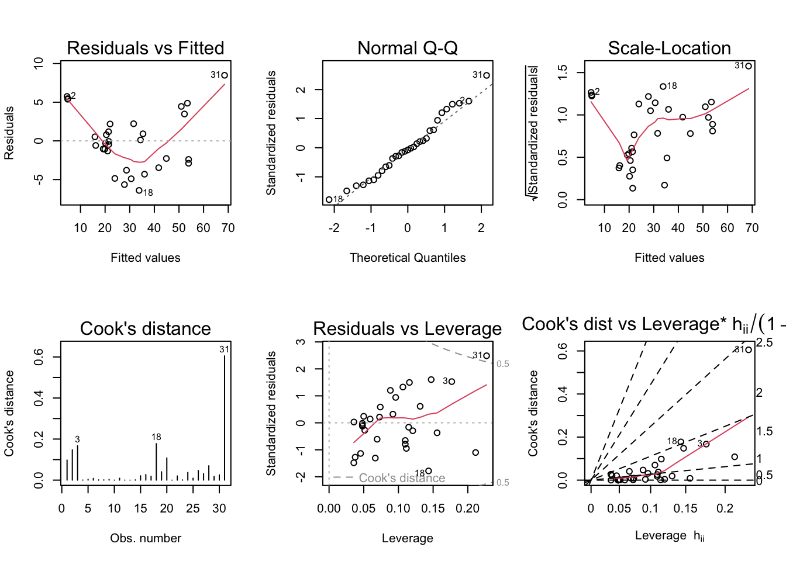

Loading required package: car
Loading required package: carData
Attaching package: 'car'
The following object is masked from 'package:dplyr':
recode
The following object is masked from 'package:purrr':
some
Loading required package: effects
lattice theme set by effectsTheme()
See ?effectsTheme for details.
Code
library(smss)library(sjPlot)
Learn more about sjPlot with 'browseVignettes("sjPlot")'.
Code
library(sjmisc)
Install package "strengejacke" from GitHub (`devtools::install_github("strengejacke/strengejacke")`) to load all sj-packages at once!
Attaching package: 'sjmisc'
The following object is masked from 'package:purrr':
is_empty
The following object is masked from 'package:tidyr':
replace_na
The following object is masked from 'package:tibble':
add_case
Code
library(stargazer)
Please cite as:
Hlavac, Marek (2022). stargazer: Well-Formatted Regression and Summary Statistics Tables.
R package version 5.2.3. https://CRAN.R-project.org/package=stargazer
Code
library(broom)library(qpcR)
Loading required package: MASS
Attaching package: 'MASS'
The following object is masked from 'package:dplyr':
select
Loading required package: minpack.lm
Loading required package: rgl
Loading required package: robustbase
Attaching package: 'robustbase'
The following object is masked from 'package:alr4':
cloud
Loading required package: Matrix
Attaching package: 'Matrix'
The following objects are masked from 'package:tidyr':
expand, pack, unpack
Question 1
I started out by reading in the house.selling.price.2 data set & recreating the correlation matrix & regression output for home price.
Code
#Reading in Datadata("house.selling.price.2")head(house.selling.price.2)
P S Be Ba New
1 48.5 1.10 3 1 0
2 55.0 1.01 3 2 0
3 68.0 1.45 3 2 0
4 137.0 2.40 3 3 0
5 309.4 3.30 4 3 1
6 17.5 0.40 1 1 0
Code
#Correlation matrixcor(house.selling.price.2)
P S Be Ba New
P 1.0000000 0.8988136 0.5902675 0.7136960 0.3565540
S 0.8988136 1.0000000 0.6691137 0.6624828 0.1762879
Be 0.5902675 0.6691137 1.0000000 0.3337966 0.2672091
Ba 0.7136960 0.6624828 0.3337966 1.0000000 0.1820651
New 0.3565540 0.1762879 0.2672091 0.1820651 1.0000000
Code
#Regression Output all variables explanatorysummary(lm(P ~ S + Be + Ba + New, data = house.selling.price.2))
Call:
lm(formula = P ~ S + Be + Ba + New, data = house.selling.price.2)
Residuals:
Min 1Q Median 3Q Max
-36.212 -9.546 1.277 9.406 71.953
Coefficients:
Estimate Std. Error t value Pr(>|t|)
(Intercept) -41.795 12.104 -3.453 0.000855 ***
S 64.761 5.630 11.504 < 2e-16 ***
Be -2.766 3.960 -0.698 0.486763
Ba 19.203 5.650 3.399 0.001019 **
New 18.984 3.873 4.902 4.3e-06 ***
---
Signif. codes: 0 '***' 0.001 '**' 0.01 '*' 0.05 '.' 0.1 ' ' 1
Residual standard error: 16.36 on 88 degrees of freedom
Multiple R-squared: 0.8689, Adjusted R-squared: 0.8629
F-statistic: 145.8 on 4 and 88 DF, p-value: < 2.2e-16
A
For backward elimination, which variable would be deleted first? Why?
Beds would be the first variable to be deleted, as it has the largest P-value of 0.48673 of the 4 explanatory variables and is the only explanatory variable that is not statistically significant at any level (0.1, 0.05, 0.001)
B
For forward selection, which variable would be added first? Why?
It was difficult to determine from the Regression Output table on the HW5 assignment the difference between a p-value 0 & 0.00000. Pulling up the regression summary in R gives me more precise p-values for Size and New, which shows that Size is more statistically significant than New with a smaller p-value. <2e-16 is less than 4.3e-06. Size is also the most correlated with Price of any of the explanatory variables in the mode. Therefor in forward selection Size would be added first.
C
Why do you think that BEDS has such a large P-value in the multiple regression model, even though it has a substantial correlation with PRICE?
I think that BEDS has such a large a p-value in the multiple regression model (making it not statistically significant) even though it has a substantial correlation with PRICE because of Size serving as a confounder. Size is the most statistically significant explanatory variable in the model, and the larger in size a house, the more likely it is to have more bedrooms.
D
I created the first Models 1 & 2 using the backwards selection method and Model 3 using the forward selection method
Model 1: All 4 explanatory variables Size, Beds, Baths, & New
Model 2: 3 explanatory variables Size, Bath, & New
Model 3: 2 explanatory variables Bath & New
Code
#Model 1model_1 <-lm(P ~ S + Be + Ba + New, data = house.selling.price.2)summary(model_1)
Call:
lm(formula = P ~ S + Be + Ba + New, data = house.selling.price.2)
Residuals:
Min 1Q Median 3Q Max
-36.212 -9.546 1.277 9.406 71.953
Coefficients:
Estimate Std. Error t value Pr(>|t|)
(Intercept) -41.795 12.104 -3.453 0.000855 ***
S 64.761 5.630 11.504 < 2e-16 ***
Be -2.766 3.960 -0.698 0.486763
Ba 19.203 5.650 3.399 0.001019 **
New 18.984 3.873 4.902 4.3e-06 ***
---
Signif. codes: 0 '***' 0.001 '**' 0.01 '*' 0.05 '.' 0.1 ' ' 1
Residual standard error: 16.36 on 88 degrees of freedom
Multiple R-squared: 0.8689, Adjusted R-squared: 0.8629
F-statistic: 145.8 on 4 and 88 DF, p-value: < 2.2e-16
Code
#Model 2model_2 <-lm(P ~ S + Ba + New, data = house.selling.price.2)summary(model_2)
Call:
lm(formula = P ~ S + Ba + New, data = house.selling.price.2)
Residuals:
Min 1Q Median 3Q Max
-34.804 -9.496 0.917 7.931 73.338
Coefficients:
Estimate Std. Error t value Pr(>|t|)
(Intercept) -47.992 8.209 -5.847 8.15e-08 ***
S 62.263 4.335 14.363 < 2e-16 ***
Ba 20.072 5.495 3.653 0.000438 ***
New 18.371 3.761 4.885 4.54e-06 ***
---
Signif. codes: 0 '***' 0.001 '**' 0.01 '*' 0.05 '.' 0.1 ' ' 1
Residual standard error: 16.31 on 89 degrees of freedom
Multiple R-squared: 0.8681, Adjusted R-squared: 0.8637
F-statistic: 195.3 on 3 and 89 DF, p-value: < 2.2e-16
Code
#Model 3model_3 <-lm(P ~ S + New , data = house.selling.price.2) summary(model_3)
Call:
lm(formula = P ~ S + New, data = house.selling.price.2)
Residuals:
Min 1Q Median 3Q Max
-47.207 -9.763 -0.091 9.984 76.405
Coefficients:
Estimate Std. Error t value Pr(>|t|)
(Intercept) -26.089 5.977 -4.365 3.39e-05 ***
S 72.575 3.508 20.690 < 2e-16 ***
New 19.587 3.995 4.903 4.16e-06 ***
---
Signif. codes: 0 '***' 0.001 '**' 0.01 '*' 0.05 '.' 0.1 ' ' 1
Residual standard error: 17.4 on 90 degrees of freedom
Multiple R-squared: 0.8484, Adjusted R-squared: 0.845
F-statistic: 251.8 on 2 and 90 DF, p-value: < 2.2e-16
R squared
Model 1 R-squared = 0.8689
Model 2 R-squared = 0.8681
Model 3 R-squared = 0.8484
Based on the R-squared, Model 1 would be selected due to having the largest R-squared of the 3 models. R-squared measures how well variation in the dependent variable is explained by variation in the independent variables.
Adjusted R-Squared
Model 1 Adjusted R-squared = 0.8629
Model 2 Adjusted R-squared = 0.8637
Model 3 Adjusted R-squared = 0.845
Based on the Adjusted R-squared, Model 2 would be selected due to having the largest R-squared of the 3 models. Adjusted R-squared measures how well variation in the dependent variable is explained by variation in the independent variables, but penalizes the addition of multiple explanatory variables.
PRESS
Model 1 PRESS = 28390.22
Model 2 PRESS = 27860.05
Model 3 PRESS = 31066
Based on the PRESS Statistics, Model 2 would be selected due to having the smallest PRESS of the 3 models. The PRESS statistic also penalizes the addition of more explanatory variables. The smaller the PRESS statistic the better the predictive power of the model.
Based on the AIC, Model 2 would be selected due to having the smallest AIC of the 3 models. The AIC statistic also penalizes the addition of more explanatory variables and the lower value the better the model.
Code
##Calculating AICsglance(model_1)$AIC
[1] 790.6225
Code
glance(model_2)$AIC
[1] 789.1366
Code
glance(model_3)$AIC
[1] 800.1262
BIC
Model 1 BIC = 805.8181
Model 2 BIC = 801.7996
Model 3 BIC = 810.2566
Based on the BIC, Model 2 would be selected due to having the smallest BIC of the 3 models. The BIC statistic also penalizes the addition of more explanatory variables and the lower the value the better the model.
Code
glance(model_1)$BIC
[1] 805.8181
Code
glance(model_2)$BIC
[1] 801.7996
Code
glance(model_3)$BIC
[1] 810.2566
E
Based on the findings in the prior question, I prefer Model 2 out of the 3 models because it has the lowest AIC, BIC, & PRESS statistics & highest adjusted R-squared of the 3 models. These all suggest that Model 2, that variance in the explanatory variables Baths, Size, & New, explain the most variance in the outcome variable home price (highest adjusted R-squared), without gratuitous addition of explanatory variables to the model (lowest PRESS, AIC, BIC). I also like that all 3 explanatory variables Size (p-value = < 2e-16), Bath (p-value = 0.000438), & New (p-value = 4.54e-06) are statistically significant in the model, which suggests they are all indeed explanatory variables for the outcome Price.
Question 2
First I read in the trees data set below, containing the measures of diameter, height, & volume of 31 black cherry trees that were cut down for lumber.
Fit a multiple regression model with the Volume as the outcome and Girth and Height as the explanatory variables
Code
#lm volume as outcome, girth & height as explanatory tree <-lm(Volume ~ Height + Girth, data = trees)summary(tree)
Call:
lm(formula = Volume ~ Height + Girth, data = trees)
Residuals:
Min 1Q Median 3Q Max
-6.4065 -2.6493 -0.2876 2.2003 8.4847
Coefficients:
Estimate Std. Error t value Pr(>|t|)
(Intercept) -57.9877 8.6382 -6.713 2.75e-07 ***
Height 0.3393 0.1302 2.607 0.0145 *
Girth 4.7082 0.2643 17.816 < 2e-16 ***
---
Signif. codes: 0 '***' 0.001 '**' 0.01 '*' 0.05 '.' 0.1 ' ' 1
Residual standard error: 3.882 on 28 degrees of freedom
Multiple R-squared: 0.948, Adjusted R-squared: 0.9442
F-statistic: 255 on 2 and 28 DF, p-value: < 2.2e-16
This linear regression model has a very high adjusted R-squared of 0.9442, suggesting that most of the variation in tree volume is explained by variation in tree height & girth. This isn’t surprising, as volume is a function of dimension & height. Height is statistically significant at the 0.05 level with a p-value of 0.0145. Girth is statistically significant at the 0.001 value with a p-value of < 2e-16.
B
Run regression diagnostic plots on the model. Based on the plots, do you think any of the regression assumptions is violated?
Code
##Diagnostic Plotspar(mfrow =c(2,3))plot(tree, which =1:6)

Based on the diagnostic plots, I think the regression assumptions of linearity, constant variance, and influential observation are violated by the model for tree volume. The curvature of the first plot of residuals vs. fitted values shows a lack of linearity. The steep increase in decrease in the scale location plot suggests the linear regression model violates the assumption of constant variance, The final three diagnostic plots suggest violation of influential observation assumption.
In Plot 4, the 31st observation has a Cook’s distance of 0.6, which is < 1, but greater than 4/n, which is 0.13 with n = 31. In the residuals vs. leverage plot, this same observation falls outside of the red curved line further supporting the violation of influential outliers. In the Cook’s distance vs. leverage plot, the 31st observation has a high Cook’s distance (0.6) and a high leverage (0.2), again suggesting the violation of the influential observation.
Question 3
Code
#Read in the datadata("florida")head(florida)
Gore Bush Buchanan
ALACHUA 47300 34062 262
BAKER 2392 5610 73
BAY 18850 38637 248
BRADFORD 3072 5413 65
BREVARD 97318 115185 570
BROWARD 386518 177279 789
A
Run a simple linear regression model where the Buchanan vote is the outcome and the Bush vote is the explanatory variable. Produce the regression diagnostic plots. Is Palm Beach County an outlier based on the diagnostic plots? Why or why not?
Code
flo <-lm(Buchanan ~ Bush, data = florida)summary(flo)
Call:
lm(formula = Buchanan ~ Bush, data = florida)
Residuals:
Min 1Q Median 3Q Max
-907.50 -46.10 -29.19 12.26 2610.19
Coefficients:
Estimate Std. Error t value Pr(>|t|)
(Intercept) 4.529e+01 5.448e+01 0.831 0.409
Bush 4.917e-03 7.644e-04 6.432 1.73e-08 ***
---
Signif. codes: 0 '***' 0.001 '**' 0.01 '*' 0.05 '.' 0.1 ' ' 1
Residual standard error: 353.9 on 65 degrees of freedom
Multiple R-squared: 0.3889, Adjusted R-squared: 0.3795
F-statistic: 41.37 on 1 and 65 DF, p-value: 1.727e-08
The adjusted R-squared value of the model is 0.3795, which suggests a moderate amount of variance in Buchanan vote is explained by variance in the Bush vote. The explanatory variable of Bush vote is statistically significant as an explanatory variable in the model with a p-value of 1.73e-08.
Code
##Diagnostic Plotspar(mfrow =c(2,3))plot(flo, which =1:6)
Palm Beach county does appear to be an outlier based on the regression diagnostic plots. It has a Cook’s distance of 2.0, suggesting it has a high influence on the plot. Palm beach is also outside the dotted lined on the residuals vs leverage plot, supporting it is an outlier. The final Cook’s distance vs. Leverage plot shows that while Palm Beach county has a high Cook’s distance, it has a low leverage of 0.05, suggesting that while Palm Beach County is an outlier it does not strongly influence the model.
B
Take the log of both variables (Bush vote and Buchanan Vote) and repeat the analysis in (A.) Does your findings change?
Code
#logsflo_log <-lm(log(Buchanan) ~log(Bush), data = florida)summary(flo_log)
Call:
lm(formula = log(Buchanan) ~ log(Bush), data = florida)
Residuals:
Min 1Q Median 3Q Max
-0.96075 -0.25949 0.01282 0.23826 1.66564
Coefficients:
Estimate Std. Error t value Pr(>|t|)
(Intercept) -2.57712 0.38919 -6.622 8.04e-09 ***
log(Bush) 0.75772 0.03936 19.251 < 2e-16 ***
---
Signif. codes: 0 '***' 0.001 '**' 0.01 '*' 0.05 '.' 0.1 ' ' 1
Residual standard error: 0.4673 on 65 degrees of freedom
Multiple R-squared: 0.8508, Adjusted R-squared: 0.8485
F-statistic: 370.6 on 1 and 65 DF, p-value: < 2.2e-16
The first plot had an adjusted R-squared of 0.3795, while the plot with log of both variable has a much higher adjusted R-squared of 0.8485. log(Bush) is still very statistically significant as an explanatory variable, with a p-value of < 2e-16.
Code
##Diagnostic Plotspar(mfrow =c(2,3))plot(flo_log, which =1:6)
Looking at the diagnostic plots, in the model taking the log of both Buchanan and Bush variables, Palm Beach the Cook’s distance decreased from 2 to 0.35, making it no an longer influential observation. Palm beach no longer shows as an outlier on the Residual vs Leverage, and continues to have low leverage on the Cook’s distance vs. leverage plot. Repeating my analysis after taking the log of both the outcome Buchanan & explanatory Bush variables does change my findings, with Palm Beach no longer an outlier in this model.
Source Code
---title: "Homework 5"author: "Emma Narkewicz"description: "Diagnostics"date: "05/09/2023"format: html: toc: true code-fold: true code-copy: true code-tools: truecategories: - hw5 - emma_narkewicz - diagnostics---```{r}library(tidyverse)library(alr4)library(smss)library(sjPlot)library(sjmisc)library(stargazer)library(broom)library(qpcR)```# Question 1I started out by reading in the house.selling.price.2 data set & recreating the correlation matrix & regression output for home price.```{r}#Reading in Datadata("house.selling.price.2")head(house.selling.price.2)``````{r}#Correlation matrixcor(house.selling.price.2)``````{r}#Regression Output all variables explanatorysummary(lm(P ~ S + Be + Ba + New, data = house.selling.price.2))```### AFor backward elimination, which variable would be deleted first? Why?Beds would be the first variable to be deleted, as it has the largest P-value of 0.48673 of the 4 explanatory variables and is the only explanatory variable that is not statistically significant at any level (0.1, 0.05, 0.001)### BFor forward selection, which variable would be added first? Why?It was difficult to determine from the Regression Output table on the HW5 assignment the difference between a p-value 0 & 0.00000. Pulling up the regression summary in R gives me more precise p-values for Size and New, which shows that Size is more statistically significant than New with a smaller p-value. \<2e-16 is less than 4.3e-06. Size is also the most correlated with Price of any of the explanatory variables in the mode. Therefor in forward selection Size would be added first.### CWhy do you think that BEDS has such a large P-value in the multiple regression model, even though it has a substantial correlation with PRICE?I think that BEDS has such a large a p-value in the multiple regression model (making it not statistically significant) even though it has a substantial correlation with PRICE because of Size serving as a confounder. Size is the most statistically significant explanatory variable in the model, and the larger in size a house, the more likely it is to have more bedrooms.### DI created the first Models 1 & 2 using the backwards selection method and Model 3 using the forward selection methodModel 1: All 4 explanatory variables Size, Beds, Baths, & NewModel 2: 3 explanatory variables Size, Bath, & NewModel 3: 2 explanatory variables Bath & New```{r}#Model 1model_1 <-lm(P ~ S + Be + Ba + New, data = house.selling.price.2)summary(model_1)``````{r}#Model 2model_2 <-lm(P ~ S + Ba + New, data = house.selling.price.2)summary(model_2)``````{r}#Model 3model_3 <-lm(P ~ S + New , data = house.selling.price.2) summary(model_3)```- 1. R squared - Model 1 R-squared = 0.8689 - Model 2 R-squared = 0.8681 - Model 3 R-squared = 0.8484Based on the R-squared, Model 1 would be selected due to having the largest R-squared of the 3 models. R-squared measures how well variation in the dependent variable is explained by variation in the independent variables.- 2. Adjusted R-Squared - Model 1 Adjusted R-squared = 0.8629 - Model 2 Adjusted R-squared = 0.8637 - Model 3 Adjusted R-squared = 0.845Based on the Adjusted R-squared, Model 2 would be selected due to having the largest R-squared of the 3 models. Adjusted R-squared measures how well variation in the dependent variable is explained by variation in the independent variables, but penalizes the addition of multiple explanatory variables.- 3. PRESS- Model 1 PRESS = 28390.22- Model 2 PRESS = 27860.05- Model 3 PRESS = 31066Based on the PRESS Statistics, Model 2 would be selected due to having the smallest PRESS of the 3 models. The PRESS statistic also penalizes the addition of more explanatory variables. The smaller the PRESS statistic the better the predictive power of the model.```{r}#Calculating PRESS Statisticspr <-resid(model_1)/(1-lm.influence(model_1)$hat)sum(pr^2)pr <-resid(model_2)/(1-lm.influence(model_2)$hat)sum(pr^2)pr <-resid(model_3)/(1-lm.influence(model_3)$hat)sum(pr^2)```- 4. AIC - Model 1 AIC = 790.6225 - Model 2 AIC = 789.1366 - Model 3 AIC = 800.1262Based on the AIC, Model 2 would be selected due to having the smallest AIC of the 3 models. The AIC statistic also penalizes the addition of more explanatory variables and the lower value the better the model.```{r}##Calculating AICsglance(model_1)$AICglance(model_2)$AICglance(model_3)$AIC```- 5. BIC - Model 1 BIC = 805.8181 - Model 2 BIC = 801.7996 - Model 3 BIC = 810.2566Based on the BIC, Model 2 would be selected due to having the smallest BIC of the 3 models. The BIC statistic also penalizes the addition of more explanatory variables and the lower the value the better the model.```{r}glance(model_1)$BICglance(model_2)$BICglance(model_3)$BIC```### EBased on the findings in the prior question, I prefer Model 2 out of the 3 models because it has the lowest AIC, BIC, & PRESS statistics & highest adjusted R-squared of the 3 models. These all suggest that Model 2, that variance in the explanatory variables Baths, Size, & New, explain the most variance in the outcome variable home price (highest adjusted R-squared), without gratuitous addition of explanatory variables to the model (lowest PRESS, AIC, BIC). I also like that all 3 explanatory variables Size (p-value = \< 2e-16), Bath (p-value = 0.000438), & New (p-value = 4.54e-06) are statistically significant in the model, which suggests they are all indeed explanatory variables for the outcome Price.## Question 2First I read in the trees data set below, containing the measures of diameter, height, & volume of 31 black cherry trees that were cut down for lumber.```{r}data("trees")head(trees)```### AFit a multiple regression model with the Volume as the outcome and Girth and Height as the explanatory variables```{r}#lm volume as outcome, girth & height as explanatory tree <-lm(Volume ~ Height + Girth, data = trees)summary(tree)```This linear regression model has a very high adjusted R-squared of 0.9442, suggesting that most of the variation in tree volume is explained by variation in tree height & girth. This isn't surprising, as volume is a function of dimension & height. Height is statistically significant at the 0.05 level with a p-value of 0.0145. Girth is statistically significant at the 0.001 value with a p-value of \< 2e-16.### BRun regression diagnostic plots on the model. Based on the plots, do you think any of the regression assumptions is violated?```{r}##Diagnostic Plotspar(mfrow =c(2,3))plot(tree, which =1:6)```Based on the diagnostic plots, I think the regression assumptions of linearity, constant variance, and influential observation are violated by the model for tree volume. The curvature of the first plot of residuals vs. fitted values shows a lack of linearity. The steep increase in decrease in the scale location plot suggests the linear regression model violates the assumption of constant variance, The final three diagnostic plots suggest violation of influential observation assumption.In Plot 4, the 31st observation has a Cook's distance of 0.6, which is \< 1, but greater than 4/n, which is 0.13 with n = 31. In the residuals vs. leverage plot, this same observation falls outside of the red curved line further supporting the violation of influential outliers. In the Cook's distance vs. leverage plot, the 31st observation has a high Cook's distance (0.6) and a high leverage (0.2), again suggesting the violation of the influential observation.## Question 3```{r}#Read in the datadata("florida")head(florida)```### ARun a simple linear regression model where the Buchanan vote is the outcome and the Bush vote is the explanatory variable. Produce the regression diagnostic plots. Is Palm Beach County an outlier based on the diagnostic plots? Why or why not?```{r}flo <-lm(Buchanan ~ Bush, data = florida)summary(flo)```The adjusted R-squared value of the model is 0.3795, which suggests a moderate amount of variance in Buchanan vote is explained by variance in the Bush vote. The explanatory variable of Bush vote is statistically significant as an explanatory variable in the model with a p-value of 1.73e-08.```{r}##Diagnostic Plotspar(mfrow =c(2,3))plot(flo, which =1:6)```Palm Beach county does appear to be an outlier based on the regression diagnostic plots. It has a Cook's distance of 2.0, suggesting it has a high influence on the plot. Palm beach is also outside the dotted lined on the residuals vs leverage plot, supporting it is an outlier. The final Cook's distance vs. Leverage plot shows that while Palm Beach county has a high Cook's distance, it has a low leverage of 0.05, suggesting that while Palm Beach County is an outlier it does not strongly influence the model.### BTake the log of both variables (Bush vote and Buchanan Vote) and repeat the analysis in (A.) Does your findings change?```{r}#logsflo_log <-lm(log(Buchanan) ~log(Bush), data = florida)summary(flo_log)```The first plot had an adjusted R-squared of 0.3795, while the plot with log of both variable has a much higher adjusted R-squared of 0.8485. log(Bush) is still very statistically significant as an explanatory variable, with a p-value of \< 2e-16.```{r}##Diagnostic Plotspar(mfrow =c(2,3))plot(flo_log, which =1:6)```Looking at the diagnostic plots, in the model taking the log of both Buchanan and Bush variables, Palm Beach the Cook's distance decreased from 2 to 0.35, making it no an longer influential observation. Palm beach no longer shows as an outlier on the Residual vs Leverage, and continues to have low leverage on the Cook's distance vs. leverage plot. Repeating my analysis after taking the log of both the outcome Buchanan & explanatory Bush variables does change my findings, with Palm Beach no longer an outlier in this model.